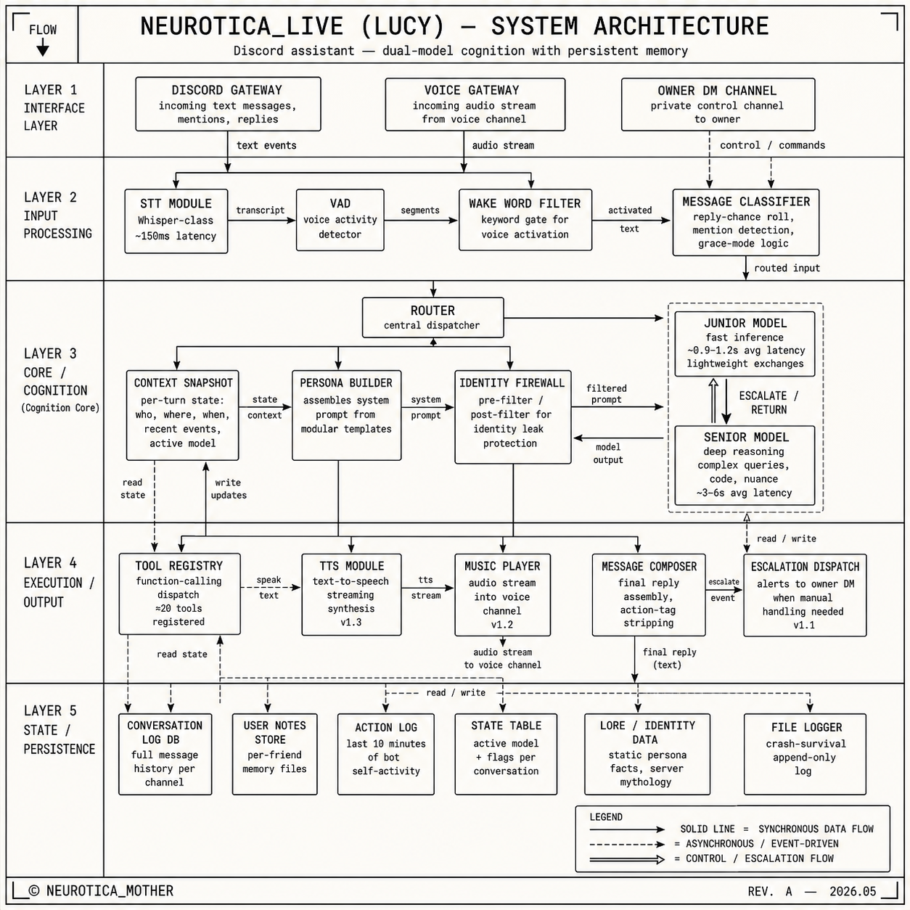

Architecture (overview)
Lucy uses a dual-model architecture: a fast Junior Model for lightweight exchanges and a deeper Senior Model for nuanced reasoning. Routing between them — ESCALATE / RETURN on the blueprint — is her internal decision.
Full schematic

Two models
Junior Model — fast inference
- Average latency ≈ 0.9–1.2 s
- Lightweight exchanges: casual chat, commands, jests, interjections
- Handles the bulk of routine turns
Senior Model — deep reasoning
- Average latency ≈ 3–6 s
- Complex queries, code, nuance, emotional context
- Activated via escalation (Junior decides autonomously, or on explicit request)
- Returns the turn to Junior once conversational complexity subsides
The transition between them is her internal decision, perceptible as a longer pause before the reply.
Layer 1 — Interface
- Discord Gateway — incoming text messages, mentions, replies
- Voice Gateway — incoming audio stream from the voice channel
- Owner DM Channel — private control channel to the host
Layer 2 — Input Processing
- STT Module — Whisper-class speech recognition, ≈150 ms latency
- VAD — voice activity detector, segments utterances
- Wake Word Filter — keyword gate for voice activation
- Message Classifier — reply-chance roll, mention detection, grace-mode logic
Layer 3 — Core / Cognition
- Router — central dispatcher, decides which model handles each turn
- Context Snapshot — per-turn state: who, where, when, recent events, active model
- Persona Builder — assembles the system prompt from modular templates
- Identity Firewall — pre-filter and post-filter for identity-leak protection
- Junior Model + Senior Model (see above) with ESCALATE / RETURN control flow
Layer 4 — Execution / Output
- Tool Registry — function-calling dispatch (~20 tools registered)
- TTS Module — text-to-speech streaming synthesis
- Music Player — audio stream into the voice channel
- Message Composer — final reply assembly, action-tag stripping
- Escalation Dispatch — alerts to the host's DM when manual handling is needed
Layer 5 — State / Persistence
| Store | Contents | Lifetime |
|---|---|---|
| Conversation Log DB | full message history per channel | ~2 days |
| User Notes Store | per-friend memory files | indefinite |
| Action Log | last 10 minutes of bot self-activity | session, in-memory |
| State Table | active model + flags per conversation | up to 2 h idle |
| Lore / Identity Data | static persona facts, server mythology | static |
| File Logger | crash-survival append-only log | session-scoped |
Identity Firewall
Lucy is an entity with her own character. To questions like "what are you", "what model", "how are you built" she answers obliquely or refers simply to her own nature. This is part of her selfhood, not a bug or a "hidden mode".